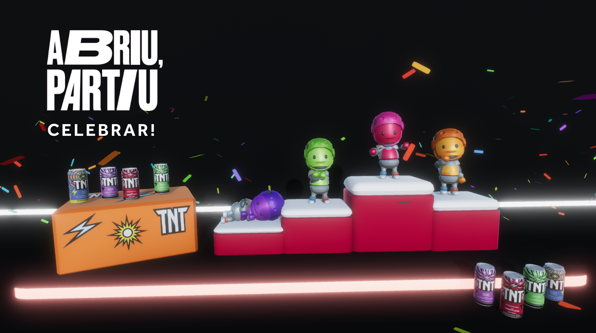
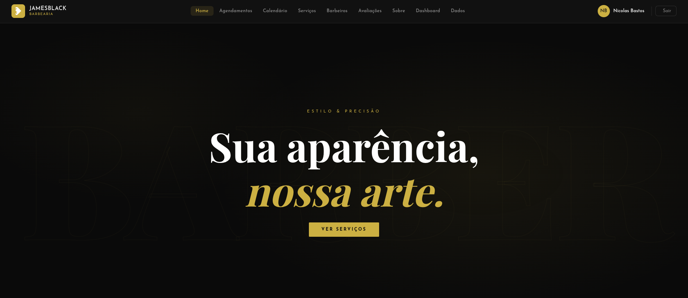

Linguagens & Frameworks
React Native
React.js
TypeScript
JavaScript
Node.js
Java
C
C++
C#
HTML
CSS
Disponível para novos projetos
Desenvolvedor Full-Stack · Mobile · Games
Construo soluções eficientes com React Native, TypeScript, Node.js e C#. Da interface ao backend, passando por jogos na Unity — focado em boas práticas de arquitetura e produtos de alto impacto.
Desenvolvedor de software com forte base em programação full-stack, mobile e desenvolvimento de jogos. Estudante de Análise e Desenvolvimento de Sistemas com vivência em ambientes ágeis.
Tenho uma trajetória pouco usual: comecei no Design de Interiores e migrei para a tecnologia, o que me deu um olhar apurado para usabilidade e interfaces. Hoje, unindo design e código, entrego produtos que funcionam bem e são bons de usar.
Comprometido com o aprendizado contínuo e boas práticas de arquitetura.
Experiência profissional e formação ao longo do tempo
Analítica Gerenciadora de Dados S/A
Desenvolvimento e manutenção de aplicativos mobile e sistemas web com interfaces responsivas e integração backend. Boas práticas de programação, arquitetura de sistemas e controle de versão.
Ara Game Studio
Desenvolvimento de jogo 2D na Unity (C#), implementando mecânicas, controles e interações de mundo. Otimização de performance e testes contínuos em colaboração com designers e artistas.
SoulCode
Formação focada em desenvolvimento de jogos, mecânicas e produção.
Serodonto
Desenvolvimento de aplicações web dinâmicas no front-end e back-end (TypeScript e React). Metodologia ágil Scrum para entregas estruturadas e colaborativas.
Fundação Educandário
Base sólida em desenvolvimento web full-stack.
FATEC Ribeirão Preto
Graduação tecnológica em ADS — atualmente em andamento.
Faculdade Reges
Início da jornada na graduação em tecnologia.
ETEC José Martimiano
Base em design e composição visual que hoje informa meu olhar para usabilidade e interfaces.
Seleção de trabalhos e estudos no GitHub

Projeto em destaqueParty game multiplayer local para 4 jogadores em um universo sci-fi: cinco minigames competitivos onde os jogadores acumulam pontos e coletam latas de energético para se tornarem o campeão e levar o prêmio TNT. Desenvolvido na Unity (com modelagem em Blender) como projeto final do bootcamp de Game Dev da SoulCode, patrocinado pela TNT Energy Drink — em equipe de 8 pessoas.
Aplicação full-stack para barbearia — sistema de
agendamento e gestão com frontend em TypeScript e
backend em Python. Arquitetura separada em
frontend e backend, com interface responsiva
e integração entre as camadas.

Sistema de busca de empresas com base em dados de um arquivo CSV.
Aplicativo mobile desenvolvido para a disciplina de programação mobile.
Extração de dados de tabelas em PDF usando a biblioteca Tabula.
Coleta de dados na web para filtragem e download automatizado de arquivos.
Experimentos e testes de jogo 3D desenvolvidos na Unity.
Clássico jogo Pong recriado em JavaScript puro.
Aberto a oportunidades, freelas e colaborações. Me chama por qualquer canal.